首页 > Python > Python编程环境搭建
Python Eclipse+PyDec下载和安装教程（超级详细）
Eclipse 是著名的跨平台 IDE 工具，最初 Eclipse 是 IBM 支持开发的免费 Java 开发工具，2001 年 11 月贡献给开源社区，目前它由非盈利软件供应商联盟 Eclipse 基金会管理。
Eclipse 本身也是一个框架平台，它有着丰富的插件，例如 C++、Python、PHP 等开发其他语言的插件。除此之外，Eclipse 是绿色软件，不需要写注册表，卸载非常方便。
安装 Eclipse+PyDev 要比 PyCharm 复杂，大致分为以下 3 个步骤：
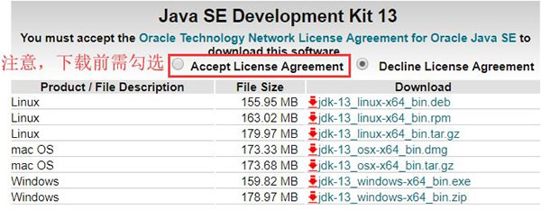
图 1 Java SE 13下载方式
从图 1 中可以看到，针对不同的平台和操作系统，官方提供了多个版本。读者可根据自己机器的情况，下载合适的版本。由于本机是 Windows 系统，因此可以下载最后两种版本中的任意一个。
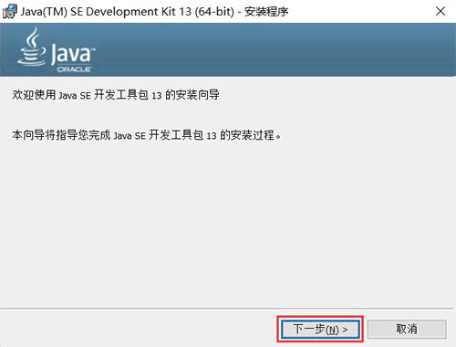
图 2 Java JDK安装初始界面
直接点击“下一步”，进入图 3 所示的界面，通过点击“更改”按钮，可修改 JDK 的安装路径。
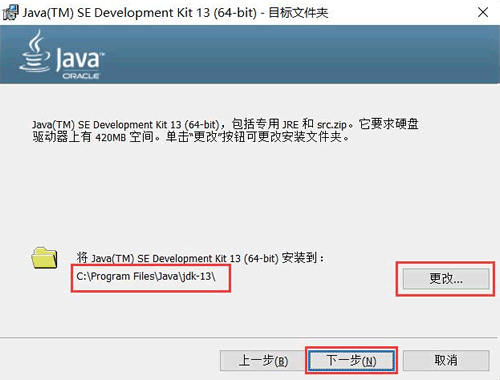
图 3 JDK修改安装路径界面
继续点击“下一步”，将开始安装 JDK。安装完成后，会转到图 4 所示的界面。由此，JDK 就成功安装啦。
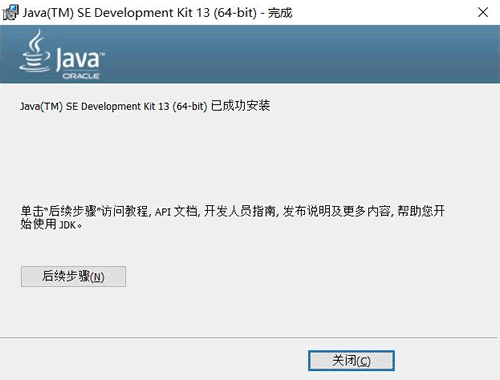
图 4 JDK 成功安装界面
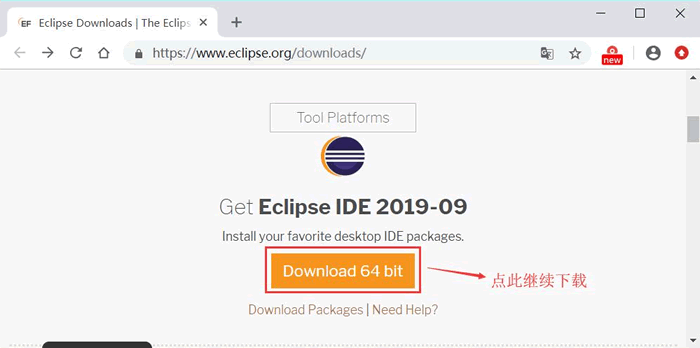
图 5 Eclipse最新版下载地址
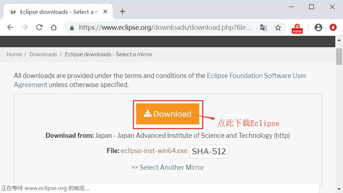
图 6 下载 Eclipse
下载完成后，会得到名为 eclipse-inst-win64.exe 的可执行文件，双击打开后会看到图 7 所示的界面。
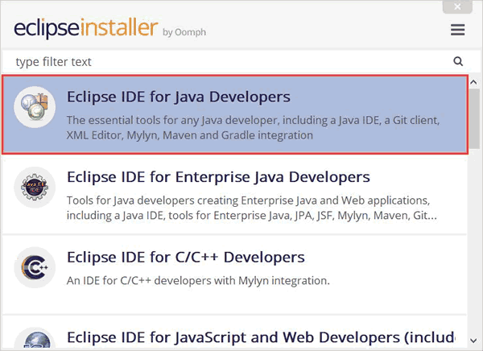
图 7 Eclipse开始安装界面
选择“Eclipse IDE for Java Developers”，进入图 8 所示的界面。
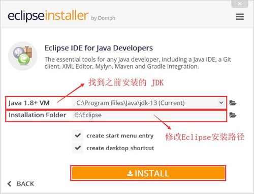
图 8 自定义 Eclipse 安装路径
在图 8 中，我们需要将之前安装的 JDK 导入，并修改 Eclipse 的默认安装路径（建议安装到除系统盘之前的其它盘），之后点击 "INSTALLING"，即可开始安装 Eclipse（如图 9 所示）。
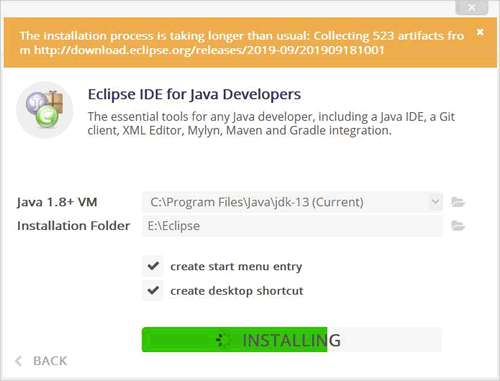
图 9 Eclipse安装过程示意图
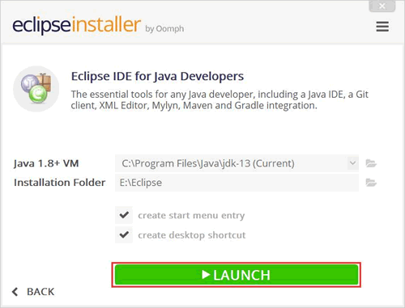
图 10 Eclipse安装完成示意图
在 Eclipse 启动过程中，会弹出如图 11 所示的选择工作空间对话框。
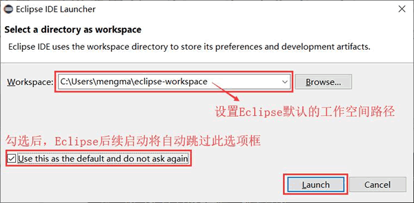
图 11 Eclipse工作空间对话框
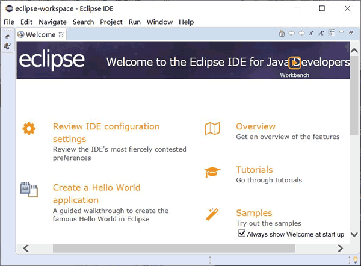
图 12 Eclipse 欢迎界面
首先启动 Eclipse，依次选择菜单“Help->Install New Software”，会弹出如图 13 所示的对话框。
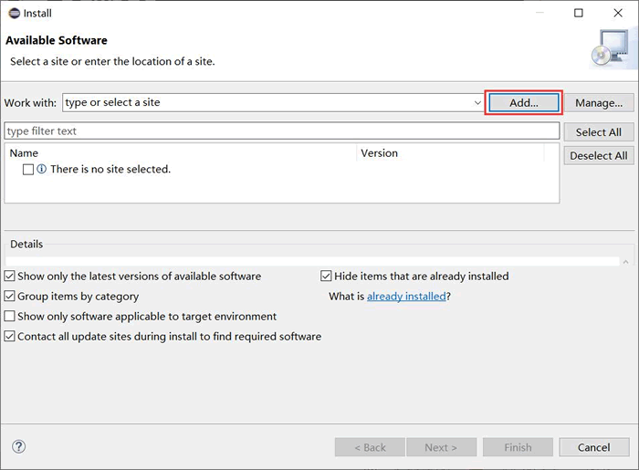
图 13
点击“ADD”，出现如图 14 所示的对话框，在此对话框的 Location 文本框中，输出 PyDev 插件的下载地址（http://pydev.org/updates），然后点击“OK”按钮，Eclipse 就会通过输入的网址查找插件，如果能够找到插件，会出现如图 14 所示的对话框。
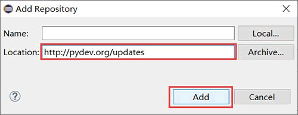
图 14 填写 PyDev 下载地址
选择“PyDev”，点击“Next”，即可开始安装 PyDev 插件（如图 15 所示）。安装完成后，需选择"restart"重启Eclipse才能生效。
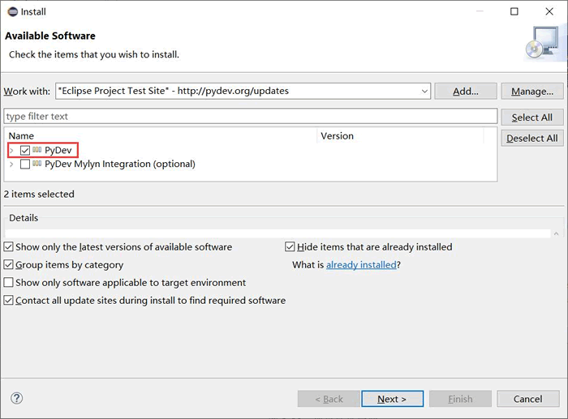
图 15 PyDev 安装示意图
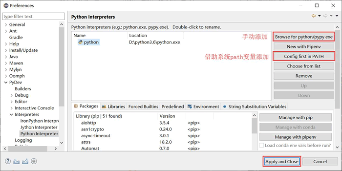
图 16 设置 Python 解释器
Eclipse 本身也是一个框架平台，它有着丰富的插件，例如 C++、Python、PHP 等开发其他语言的插件。除此之外，Eclipse 是绿色软件，不需要写注册表，卸载非常方便。
安装 Eclipse+PyDev 要比 PyCharm 复杂，大致分为以下 3 个步骤：
- 安装 JRE（Java 运行环境）或 JDK（Java 开发工具包），Eclipse 是基于 Java 的开发工具，必须有 Java 运行环境才能运行；
- 下载和安装 Eclipse；
- 安装 PyDev 插件。
安装 Eclipse 运行环境（JDK）
进入 JavaSE下载界面，这里下载的是 Java SE 13 最新版本（如图 1 所示）。如果本机中以安装有 JDK，可直接跳过此步，直接安装 Eclipse。
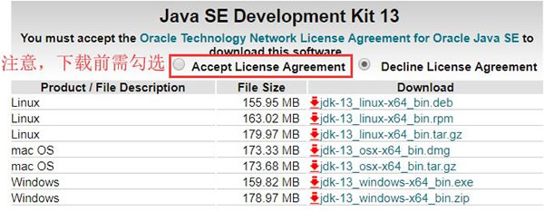
图 1 Java SE 13下载方式
从图 1 中可以看到，针对不同的平台和操作系统，官方提供了多个版本。读者可根据自己机器的情况，下载合适的版本。由于本机是 Windows 系统，因此可以下载最后两种版本中的任意一个。
下载后，会得到一个 jdk-13_windows-x64_bin.exe 文件，打开此文件，即可看到如图 2 所示的安装界面。注意，.zip格式是压缩包，下载后无法进行安装，而 .exe 格式是可执行文件，下载后需运行此文件，才能成功安装。本节以下载 exe 格式安装包为例。
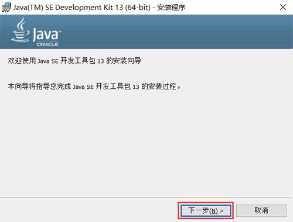
图 2 Java JDK安装初始界面
直接点击“下一步”，进入图 3 所示的界面，通过点击“更改”按钮，可修改 JDK 的安装路径。
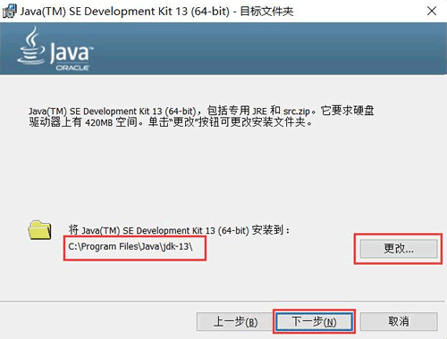
图 3 JDK修改安装路径界面
继续点击“下一步”，将开始安装 JDK。安装完成后，会转到图 4 所示的界面。由此，JDK 就成功安装啦。
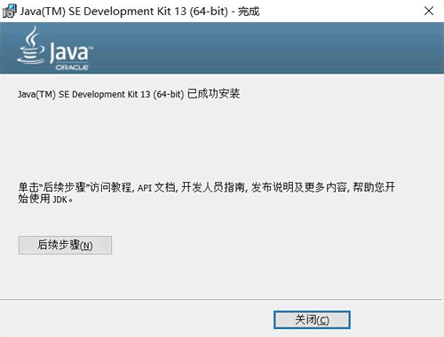
图 4 JDK 成功安装界面
Eclipse下载和安装
Eclipse官网提供有多个版本的下载地址，本节将以 2019 年 9 月份推出的最新版为例（如图 5 所示）。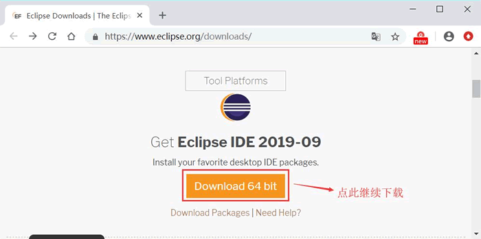
图 5 Eclipse最新版下载地址
点击图 5 所示的下载按钮，会转到如图 6 所示的页面，再次点击下载安装即可开始下载。注意，Eclipse 4.9 版本以及之前的版本，都提供有 32 位和 64 位的安装包，而 4.9 之后的版本仅提供 64 位的安装包。如果读者想下载 Eclipse 4.9 以及之前的版本，可访问https://archive.eclipse.org/eclipse/downloads/。
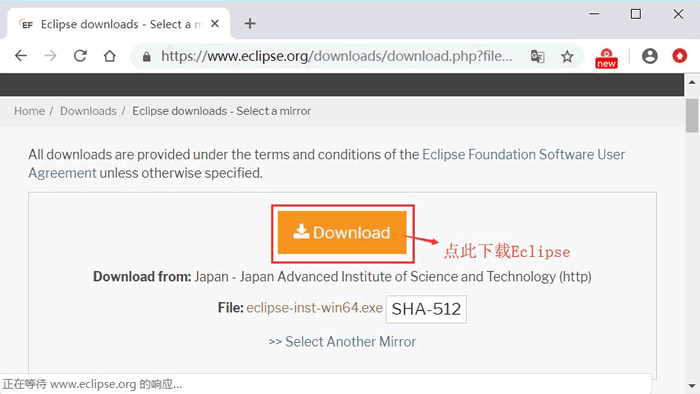
图 6 下载 Eclipse
下载完成后，会得到名为 eclipse-inst-win64.exe 的可执行文件，双击打开后会看到图 7 所示的界面。
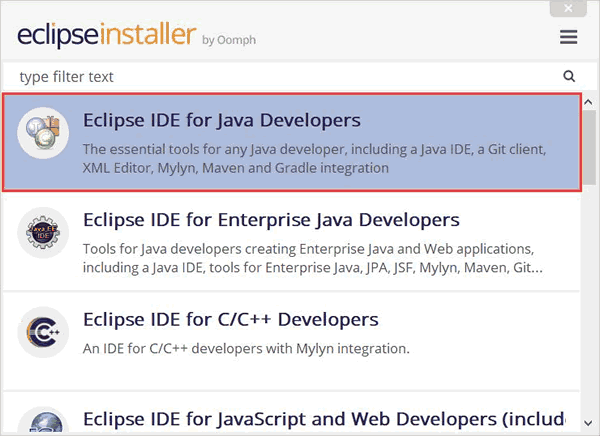
图 7 Eclipse开始安装界面
选择“Eclipse IDE for Java Developers”，进入图 8 所示的界面。
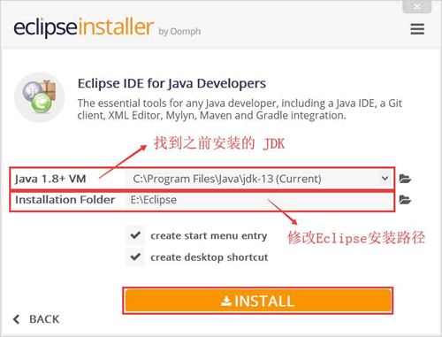
图 8 自定义 Eclipse 安装路径
在图 8 中，我们需要将之前安装的 JDK 导入，并修改 Eclipse 的默认安装路径（建议安装到除系统盘之前的其它盘），之后点击 "INSTALLING"，即可开始安装 Eclipse（如图 9 所示）。
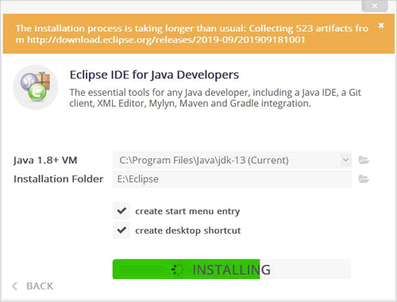
图 9 Eclipse安装过程示意图
安装完成，会出现如下界面，点击 LAUNCH 按钮，即可启动 Eclipse。注意，安装期间，可能会弹出选项框，选择“ACCEPT”即可。
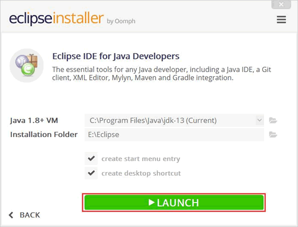
图 10 Eclipse安装完成示意图
在 Eclipse 启动过程中，会弹出如图 11 所示的选择工作空间对话框。
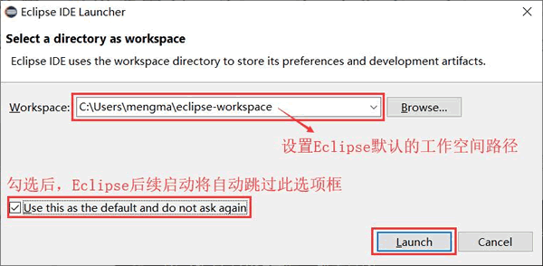
图 11 Eclipse工作空间对话框
设置好工作空间之后，初次启动 Eclipse 会进入图 12 所示的欢迎界面。由此，Eclipse就成功安装了。工作空间是用来保存工程的文件夹，默认情况下每次 Eclipse 启动时都需要选择工作空间，当然如果觉得每次启动都选择工作空间比较麻烦，可以勾选“Use this as the default and to not ask again”选项。
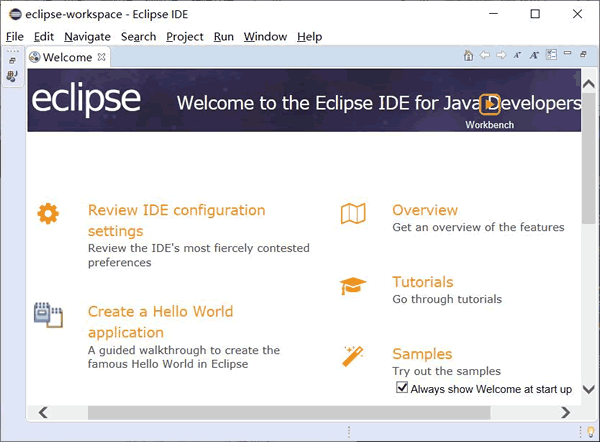
图 12 Eclipse 欢迎界面
Eclipse安装PyDev插件
PyDev 插件不需要我们手动去下载，借助 Eclipse 工具可实现在线安装，具体的安装过程如下。首先启动 Eclipse，依次选择菜单“Help->Install New Software”，会弹出如图 13 所示的对话框。
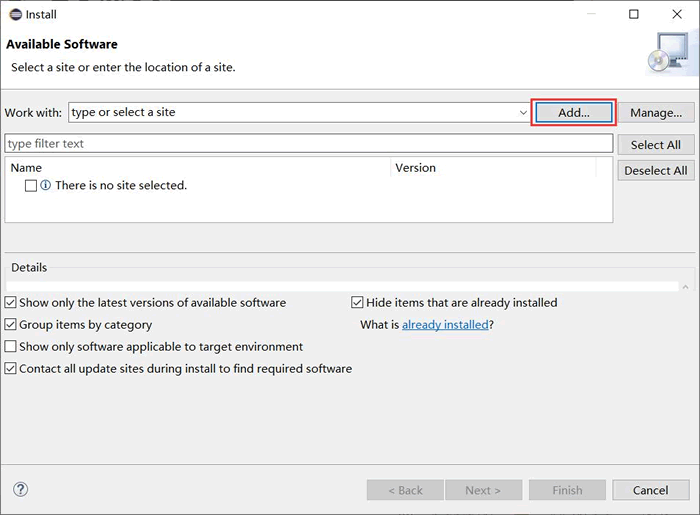
图 13
点击“ADD”，出现如图 14 所示的对话框，在此对话框的 Location 文本框中，输出 PyDev 插件的下载地址（http://pydev.org/updates），然后点击“OK”按钮，Eclipse 就会通过输入的网址查找插件，如果能够找到插件，会出现如图 14 所示的对话框。
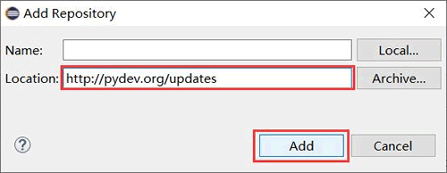
图 14 填写 PyDev 下载地址
选择“PyDev”，点击“Next”，即可开始安装 PyDev 插件（如图 15 所示）。安装完成后，需选择"restart"重启Eclipse才能生效。
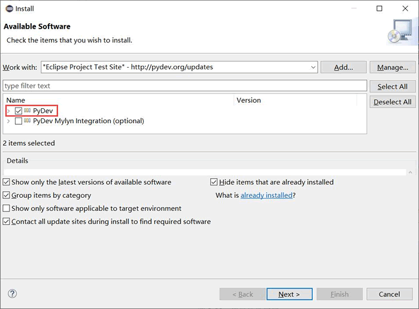
图 15 PyDev 安装示意图
Eclipse设置Python解释器
PyDev插件安装成功后，还需要设置 Python 解释器。具体步骤为：- 打开 Eclipse，选择菜单“Window->Preferences”，弹回设置对话框；
- 选择“PyDev->Interpreters->Python Interpreter”，这里可以通过点击"Config first in PATH"按钮，通过在 Path 路径中找到 Python 解释器，也可以点击“Browse for Python/pypy exe”按钮，手动找到 Python 解释器。添加完成后，点击“Apply and Close”按钮即可（如图 16 所示）。
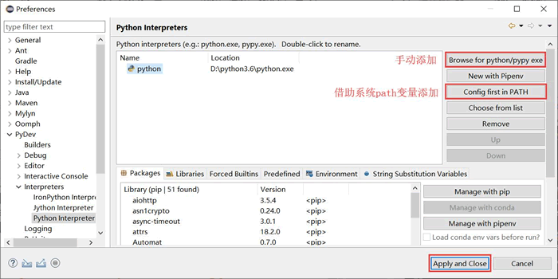
图 16 设置 Python 解释器
关于如何使用 Eclipse 运行 Python 程序，可猛击《Eclipse+PyDec运行Python程序》一文详细了解。
关注公众号「站长严长生」，在手机上阅读所有教程，随时随地都能学习。内含一款搜索神器，免费下载全网书籍和视频。

微信扫码关注公众号